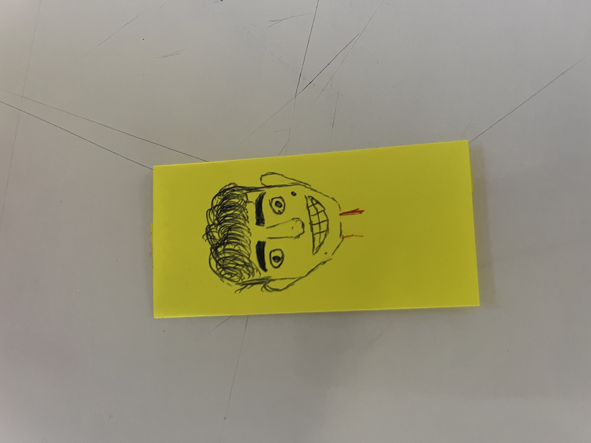

///////∖∖∖∖∖∖
////// ∖∖∖∖∖∖∖
/// ∖∖∖∖
// ◔⋰⋰⋰⋰◔ ///
// ⋰⋰ , ⋰⋰ //
// \/. //
// ∖ _____ / //
// ___∣ ∣____///
//// ∣ ∣////
∣ ∣
∣ ∣
------------------
∣
✲ ∣
∣ ☆
∣ ◦ ∣ ◦
☆ ∣
∣
☆
∧ _ ∧
(✿◔v◔ )BB
⊂⊂_______⊃ Karolina Santamaría Pavlova
